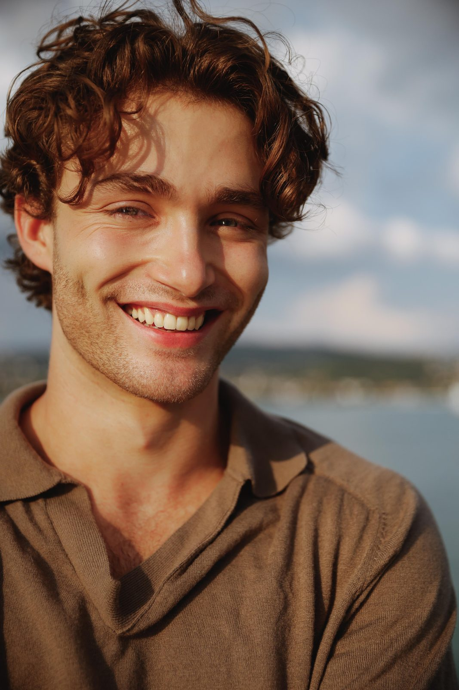
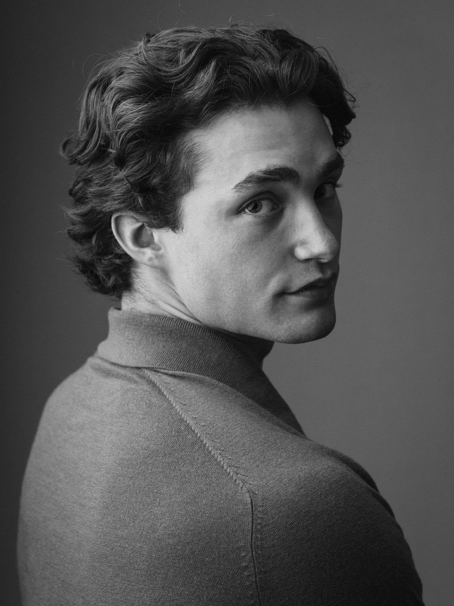

The journey — 5 parts
01 — The what and the why
Entrepreneurship has interested me for a long time (and no, I am not a guru who had an epiphany after reading Rich Dad Poor Dad). There are several reasons for this. On the one hand, my grandfather, my uncle, my father and most of my friends are all self-employed, which fundamentally shaped my childhood and my life. On the other hand, both my character and my educational and professional path are oriented toward founding my own company, whether on a larger or smaller scale.
Modeling and fitness coaching currently serve as a small playground in which I experience the advantages and disadvantages of self-employment firsthand. Of course, I have my agents and, as of now, there is no LLC or corporation involved (although that might change one day, wish me luck). Still, it has already provided several learning moments. This starts with lead generation, continues with building partner networks, initiating contracts, executing assignments, and providing follow-up support.
My work in the SREC (Student's Real Estate Club) and the FLUX (Fashion & Luxury Business Club at the University of St. Gallen) also reinforces this dynamic. In these roles, similar to a start-up environment, I have a high degree of autonomy and creative freedom, and my contribution is essential to the functioning of the organization.
Today, when people, especially in my age group, talk about entrepreneurship, the image that often comes to mind is dropshipping stores or SaaS AI ventures run by hyper-masculine men in mediocre villas on Bali. This could hardly be further from my own standards or ambitions. As may already have become clear on the other pages, I am not someone who approaches things half-heartedly or makes claims without following through.
I mention this because social media is full of explanations and “how to make money fast and easy” guides that give the impression that everyone should start a company, as if it were the only, best, and most prestigious path. This narrative is also reflected in the large number of apprenticeships in Switzerland that remain unfilled. Many young people appear to be facing a kind of existential confusion about their direction.
One of the most important insights I have taken from philosophy books and podcasts is the importance of defining a clear objective and narrowing it down as much as possible. For that reason, I regularly speak with my closest business partners and friends about our aspirations and the current progress of our projects.
I will share more about my current projects once they are further along. Both sit close to my interests and skill set, one in the B2C space and one in the B2B space. One of them I can already talk about openly: Growis, which I describe in its own chapter below.
02 — The how and the when (Part 1)
The University of St. Gallen, often considered a prime destination for aspiring elites, or for those who believe they are. Jokes aside, why did I complete my Bachelor's degree at the University of St. Gallen and begin my Master's there as well? There are several reasons, and, perhaps unsurprisingly, education itself was not the primary one.
When I had to decide what to study after completing my military service at the age of 18, about six and a half years ago, I had no clear idea. As a child I once mentioned that I wanted to become a lawyer, but that idea had long faded by then. For a while I seriously considered studying psychology at the University of Zurich, with German literature as a minor. My reasoning was simple: these were the subjects in which my grades in high school were not as poor as in the others. I was not a particularly strong student at that time.
Once I started university, following a rather turbulent period in high school marked more by a lack of discipline and ambition than by focused effort, something I do not necessarily view negatively for that stage of life, I spent much of my time going out and attending classes with only moderate commitment. During the assessment year I chose the business administration track. I found the subjects quite interesting, but I still had no clear sense of what I wanted to do later in life or even who I really was.
The outcome was predictable: I did not pass the first year. It was one of my first significant academic setbacks. Many of my friends passed and continued their studies, while I failed and had to regroup. From that point onward, my life began to change fundamentally.

03 — The how and the when (Part 2)
A monster was born.
This provocative introduction was not chosen out of self-praise or for self-affirmation, but simply to illustrate how fundamentally everything changed. At that time I was already in good shape in the gym, yet almost every other area of my life shifted drastically.
There was, of course, a process behind this transformation. At just under twenty years old I was not yet the person I am today, but the foundation was laid on the day I failed that first year. Many things changed fundamentally: the media I consumed, my approach to nutrition, my work ethic toward university and above all my mindset, which suddenly wanted to use every second of the day for something meaningful.
I pretty much stopped watching gaming videos, anime, or Netflix series, and instead focused on learning strategies, philosophy and questions about the purpose of life, performance improvement, and discipline. My mindset at the time was simple and, looking back, somewhat exaggerated: “if I did not pass this year, I would have nothing”. Of course that was not entirely true, and as I have grown older I have come to see that there were many other possible paths. Yet in my mind it was a hurdle I had to overcome to prove to myself that, despite only slightly above-average intelligence and weak preparation from high school, I could achieve something if I truly wanted it.
The bodybuilder Tom Platz once described his career with the phrase: “You have to want it as much as you want to breathe.” The statement is dramatic, but at that moment this kind of simple thinking was important to me. A year earlier it had been normal for me to go out every Wednesday night and sleep until noon the next day. Now, on Wednesdays at nine in the evening I was already in bed, and at seven in the morning I stood in line in front of the University of St. Gallen library building.
To understand my mindset, and ultimately the foundation for everything else on this website, this chapter is the most important one.
04 — The how and the when (Part 3)
I find it difficult to put into words why everything changed so drastically, but it was likely a combination of many factors. On the one hand, I wanted to meet the expectations of my girlfriend at the time and impress my friends. On the other hand, there was the sense of responsibility that I had just “failed” while studying at my parents' expense. The biggest factor, however, was that I no longer wanted to drift through life and disappoint myself.
I constantly thought about how I would look back at the end of my life, seeing all the potential I once had and realizing I had wasted it chasing short-term dopamine. Like many things in life, a small spark can ignite a fire, and once it starts, the momentum builds on itself.
I will discuss the other areas of life that were influenced by this shift on different pages. In the next few sentences, however, I focus specifically on the university, the student clubs, and my work as a working student.
From that point onward, everything at university progressed smoothly. I managed to achieve strong grades, which later opened the doors to studying in the United States and ultimately led to modeling opportunities. Many things built upon each other from there.
The remainder of my Bachelor's studies also proceeded very smoothly. I maintained a high standard for my work, achieved strong grades, and did not face major time constraints. My Bachelor's thesis, the final highlight, received a grade of 6, the highest possible grade in the Swiss grading system, and I graduated with a very strong overall average.
The Master's program has so far followed a similar trajectory, although I am still in the first semester and therefore cannot say too much yet. In that sense, the question of academic performance had largely been resolved. Looking back, it is still interesting that I failed the first year but later completed the Bachelor's degree with relative ease. From the second year onward, when students are able to choose both the number and type of courses they take, I wanted more than just university. My first modeling experiences are described in the modeling section, but my main motivation at the time was intellectual engagement, professional experience, and the development of a network. I therefore joined the Student's Real Estate Club, where I have remained active in marketing until today.
At the same time, I applied for a position at a small consulting subsidiary and was able to take on the role, partly thanks to previous work experience in my father's company, working at a 40 to 50 percent capacity. Combined with intensive training in the gym and a relationship at the time, this schedule had a major impact on my time management and created a large number of fixed commitments. Whether this is seen as positive or negative is left to the reader. For me it was clearly beneficial, as it allowed me to gain professional experience, build a network, and feel that I was needed. During the Bachelor's years, through networking, professional experiences, conversations with friends, and especially discussions within my family, it became increasingly clear that in the long term I wanted to build something of my own, either alongside other activities or eventually as a primary occupation. This mindset became even more solidified during the Master's program in Business Innovation (MBI), where the focus on entrepreneurship and building new ventures further reinforced it.
What would a chapter about the University of St. Gallen be without addressing networking in more depth? Networking, often referred to in German as gaining Vitamin B (Beziehungen), is a sensitive topic and is frequently ridiculed in many circles. It is surrounded by numerous stereotypes. Some claim that companies only hire people who personally know senior managers or C-level executives. Others suggest that nothing of substance is learned at the university and that students simply sit in cafés discussing their wealthy fathers and their investment funds or real estate portfolios instead of engaging with research in business administration.
Do these accusations have some basis, and is there a reason they exist? Certainly. However, they apply only to a portion of the environment, and it would be difficult to say how large that portion actually is.
For many people, the University of St. Gallen is simply a place where they meet like-minded individuals. It offers an environment where students can exchange ideas, motivate each other, and discuss topics that might rarely come up elsewhere. Increasing wealth in a purely capitalist sense is not always the central focus. Often the discussions revolve around self-realization, personal development, and the feeling of belonging to a community of people with similar ambitions.
In this respect, the University of St. Gallen is particularly strong: community and mutual respect among people from very different backgrounds and professional aspirations. I had the opportunity to meet individuals with a wide range of experiences, learn from them, and grow alongside them. For that I am deeply grateful to the university, as it had a profound influence on my process of self-discovery.

05 — Growis
A while ago I started working at Growis as Head of Growth. It is a heart project that I run together with three good friends, most of them also from the University of St. Gallen, and I am investing a great deal of time and money into it because I genuinely believe in our vision.
What we do is twofold. We run personal branding for founders, and we build what we call knowledge systems, which in practice means preparing companies for working with AI applications and taking care of the document management around it. My own role is primarily Head of Growth, so I look after sales and business development, but I am also involved operationally in the projects, and I can feel the direct impact of what I do.
Growis lets me apply almost everything I learned in my corporate life, as well as what I am currently studying in the MBI at the University of St. Gallen, especially when it comes to working with AI, change management, leadership and project management. Everything comes together here. It is demanding, but more rewarding than almost anything else I do, and it is meant as a long-term project with big plans and a big vision.
If you want to know more, take a closer look at our website: growis.ch.